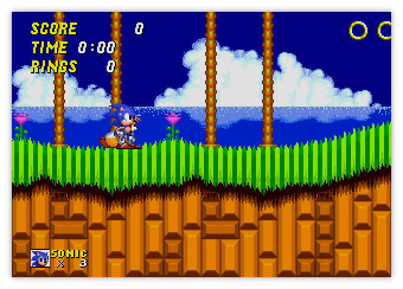
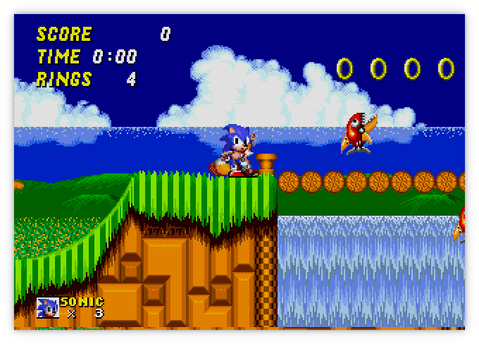

Moa
Started September 26, 2021
Moa is an emulator/simulator for computers using various 68000 and Z80 CPUs and peripherals. The original idea was to emulate the computer I had built as part of the Computie project.
Currently it can simulate the Sega Genesis, Computie (68000), and the TRS-80 Model I (Z80). Support for the Macintosh 512k is partially implemented but the ROM still wont boot.
For more details on how it works, check out this post about how I started the project: Making a 68000 Emulator in Rust
For more about the Sega Genesis support, check out this series I wrote about implementing it: Emulating the Sega Genesis
Sega Genesis/MegaDrive
From the project root, run the following:
cargo run -p moa-minifb --release --bin moa-genesis -- <ROM FILE>
The Genesis emulator is slowly coming along. It can play a decent number of game, but some games wont display anything, and a few games run but don't respond to the controller input. Games that require extra memory or nvram that would normally be inside the cartridge usually crash.
It only supports NTSC mode at the moment, and only VDP mode 5 (not the backwards compatible mode 4). I've rewritten the frame drawing code to operate pixel by pixel, so it will now draw all the layers, including the window, sort out the priority of the pixels, and almost accurately implement the shadow and highlight colour modes. Audio is not implemented yet.
There are still some problems like the colour of Tails in the Sonic 2 title screen being off. I'm not sure why that happens, but it could be trying to update the colours during the drawing of the frame, and since the code is drawing the entire frame at once when the vertical blanking period is reached, the on-the-fly changes don't have an affect.

The game play is mostly working but the time in the upper left corner doesn't seem to progress


Earthworm Jim was working before I fixed the controller behaviour in Sonic 2, which seems to have broken it in Earthworm Jim (and Mortal Kombat 1).
The following gif was only recorded at 15 frames a second instead of the full 60, so it appears jerky and some animations seem to freeze in the gif, even though that doesn't happen during normal play

Computie
For Computie, it can do everything the 68k-SMT board can do, including run the monitor program and load the Computie OS kernel and boot it from the CompactFlash card. To run it:
cargo run -p moa-console --bin moa-computie
It will open two PTYs: one for the serial terminal, and one for the SLIP
connection. Once open, it will try to launch both pyserial-miniterm as a
separate process and connect to the Computie PTY. It will also launch
slattach with the associated setup commands to create the SLIP device on the
host, and set up host routing. The exact commands in
src/machines/computie.rs might need to be adjusted to work on different
hosts.
TRS-80
For the TRS-80, it can run Level I or Level II Basic, but it doesn't yet
support a cassette tape drive or floppy drive. I haven't tested it that
thoroughly either, so any help with it would be welcome. I mostly made it to
test the Z80 cpu implementation in a simpler computer before I used in the
Genesis emulator. The frontend uses the
minifb rust crate to open a window
and render the characters to screen, as well as accept input from the keyboard.
cargo run -p moa-minifb --release --bin moa-trs-80
By default it will start Level I Basic. To use the other rom, add the option
--rom binaries/trs80/level2.rom
The characters are being drawn pixel by pixel (6x8) using characters I drew using this handy website. They aren't a perfect match of the characters used by the TRS-80
General Options
By default, the minifb frontend will scale the window by 2. This can be
changed with the --scale [1,2,4] option.
The -t or --threaded options will run the simulated hardware in a separate
thread from the frontend, which will run as fast as possible, faster than
real-time. By default, the simulated hardware is run inline with the frontend's
update cycle, which is limited to 60Hz. The simulation will be run for 16.6ms of
simulated time for each frame the frontend draws. But the simulated time is not
accurate and Sega Genesis games will run slower than they should.
The -d or --debugger option will make the emulator start the debugger
before running. There is a simple built-in debugger for stepping through
the rom instructions being emulated. The state of the CPU registers will
be displayed after each instruction, breakpoints can be set, memory contents
can be examined, and memory locations can be modified. This has helped a lot
with tracking down errors in the emulator itself.
The -x or --speed option, when given a decimal number, will multiply that
number by the milliseconds per frame, increasing or decreasing the gameplay
clock relative to the frontend's update loop. Setting it to 0.5 slows the game
down to half speed and setting it to 2 doubles the speed.
Get the Source
https://github.com/transistorfet/moa/Or clone with:
git clone git@github.com:transistorfet/moa